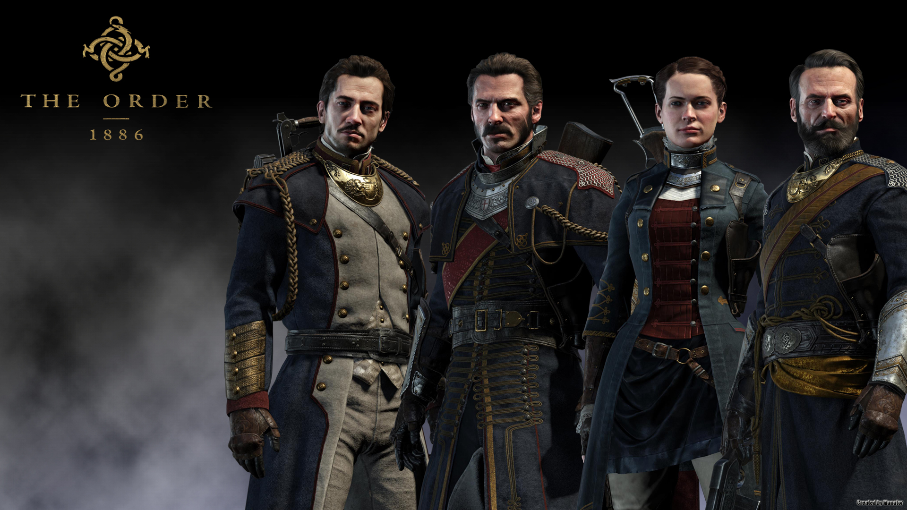

.png)
The Order: 1886
The Order: 1886 es un videojuego de disparos en tercera persona para un solo jugador desarrollado por Ready at Dawn y SCE Santa Monica Studio, y publicado por Sony Computer Entertainment, que fue anunciado en el evento E3 2013 y fue lanzado exclusivamente para la PlayStation 4 el 20 de febrero de 2015.
Plataforma
Play Station 4
Noticias
El primer gran exclusivo para PS4 de la temporada llega exhibiendo los valores de producción de cualquier película Triple A como carta de presentación. Conspiraciones, intrigas, revueltas sociales y licántropos en un Londres victorian steampunk con una ancestral Orden de caballeros que vela por combatir a las criaturas de la oscuridad. Ready at Dawn debuta a lo grande, con una tremenda pieza de entretenimiento electrónico. Beban el Agua Negra caballeros, peligros aguardan.

Novedades
Este juego nos cuenta la historia de Galahad, caballero de La Orden, una legión fundada por el rey Arturo, que tiene como fin mantener el equilibrio entre humanos y half-breeds. Él, junto a otros caballeros tendrán que desentrañar el secreto detrás de varios asesinatos y el incremento de las bestias que están azotando Londres.
Con anterioridad, Ready at Dawn había dado a conocer que The Order: 1886 está basado en la literatura Arturiana con ciertas modificaciones obvias por el tipo de adaptación a la historia del videojuego, la cual poco a poco nos mostrará a personajes como Lady Igraine, discípula de Galahad, Sir Percival, mentor del protagonista, y Marquis de Lafayette, un novato casanova cuyo gran corazón hace que sea un amigo cercano de todos los personajes. Sin embargo, lo más interesante son las referencias a la mesa redonda, el grial y la Blackwater, una “poción” que hace la función de suero de súper soldado.
De igual forma, la historia dará espacios a otros elementos importantes para la trama, como la introducción de los half-breeds (como se les llama a hombres lobo y vampiros), criaturas tan viejas como la creación y que han estado en constante guerra con La Orden desde que el rey Arturo la fundó; también habrá enfrentamientos con un grupo rebelde cuyo objetivo es desconocido.
Desafortunadamente, la historia por más interesante que parezca tiene un desarrollo poco atractivo y tiende a dejar cabos sueltos que hacen más evidentes vacíos argumentales en la trama. The Order: 1886 tiene personajes interesantes, de hecho, busca que estos tengan una relación entre sí, pero también los olvida con rapidez con el pasar de los capítulos del juego. Evidentemente, el formato cinematográfico del juego no fue la fórmula más apropiada para desarrollar la trama, ya que narra con afán los acontecimientos, lo que hace que a pesar de que estén conectados se sientan como eventos independientes. No es sorpresa que por esto se sienta que el juego es extremadamente corto.
Trailer